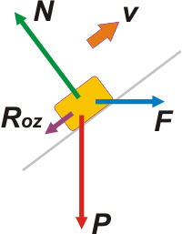

NO ME SALEN
PROBLEMAS RESUELTOS DE FÍSICA DEL CBC
(Leyes de conservación, energía mecánica)
|
|

|
|
Adicional 40 - Un cajón de 200 kg, lanzado hacia arriba
por un plano inclinado 37° con una velocidad inicial
de 9 m/s, tiene aplicada una fuerza F horizontal
constante, cuya intensidad es 800 N. El coeficiente
de rozamiento dinámico entre el cajón y el
plano es μd = 0,25. |
|
a- A partir de un planteo energético, hallar qué
distancia recorre sobre el plano hasta detenerse.
b- Calcular la variación de energía mecánica
que sufre en el ascenso.
c- Hallar la potencia instantánea correspondiente
a cada una de las fuerzas actuantes, en el
punto de partida.
d- Determinar la potencia media desarrollada
por cada una de las fuerzas, durante el ascenso. |
 |
|
Voy a resolver este ejercicio por ambas vías: dinámica y cinemática primero y después por consideraciones energéticas, como solicita el enunciado. La resolución por consideraciones de dinámica es tediosa pero sencilla. Arranquemos, como siempre, con un DCL, en este caso nos describe ese instante crucial en el que el cajón es lanzado.
Este de acá arriba es el DCL puro: nos indica las fuerzas que están actuando sobre el baúl en esa situación límite. |
|
|
|  |
La fuerza con que lo atrae la Tierra, el peso, P. La fuerza con que lo apoya el piso inclinado del camión, N. La fuerza de rozamiento dinámica Roz. Y la fuerza exterior F, que nos trae de regalo el enunciado sin indicar quién la ejerce; pero por lo menos ahora está bien dibujada: con el origen dentro de cuerpo sobre el que actúa, nuestro cajón.
Para poder operar algebraicamente con esos vectores voy a necesitar hacer alguna descomposición vectorial, y así obtener vectores co-direccionales únicamente. Lo más práctico es descomponer la fuerza peso y la F en dos direcciones -una paralela y otra normal al plano-, y lo mejor indicado para los estudiantes iniciados es hacer un segundo DCL que dé cuenta de esta decisión. |
|
|
|
| Salvo raras excepciones, el mejor criterio para elegir el SR adecuado es: que una dirección coincida con la aceleración del cuerpo (por lo que en la otra dirección la aceleración va a ser nula). |
|
|
 |
La trigonometría indica que:
Px = P . sen 37º = 1.200 N
Py = P . cos 37º = 1.600 N
Fx = F . cos 37º = 640 N
Fy = F . sen 37º = 480 N
Por las dudas que te hayas mareado con la descomposición vectorial, te sombreé los ángulos de 37º correspondientes.
Ahora sólo quedaron tres fuerzas en la dirección x y tres en la dirección y. Para escribir las ecuaciones de Newton y la derivación posterior, no voy a consignar los valores de las fuerzas sino sus nombres (si no, no sabrías qué estoy poniendo). |
|
|
|
Ahora aplicamos la Segunda Ley de la Dinámica por separado para cada eje.
Fx — Px — Roz = m a
N — FY — PY = 0
Y podemos recordar que la naturaleza de las fuerzas de rozamiento nos indica que
Roz = μd . N
Si hacés el esfuerzo de contar, vas a encontrar que hay tantas ecuaciones como incógnitas (3x3), de modo que es posible hallar el valor de la aceleración. De la segunda ecuación despejemos N.
N = FY + PY = 2.080 N
Esto lo metemos en la ecuación del rozamiento:
Roz = μd . ( FY + PY ) = 520 N
Y esto último en la primera ecuación de todas:
Fx — Px — μd . ( FY + PY ) = m a
a = Fx — Px — μd . ( FY + PY ) / m
a = — 5,4 m/s²
Ahora podemos ir a la cuestión cinemática del asunto.
Δx = v0 Δt + ½ a Δt2
vF = v0 + a Δt
La velocidad final es 0. Despejo Δt de la segunda, y lo que da lo meto en la primera. Queda así, pero vos también hacelo.
Δx = — ½ vF2 / a
|
|
|
|
|
|
Ahora viene todo el asunto energético. El trabajo de todas las fuerzas no conservativas que actúan entre 0 y F es igual a la variación de energía mecánica en el mismo intervalo:
WNCOF = ΔEMOF
Las fuerzas no conservativas son el rozamiento y la fuerza F. Por suerte son fuerzas constantes.
Wroz + WF = ECF + EPF — EC0 — EP0
No te olvides que la velocidad final es nula. Y pongamos el cero de las alturas en la posición inicial.
Roz Δx cos 180º + F Δx cos 37º = m g hF — ½ m v02
|
|
|
La altura final -como podés ver en el esquemita- es igual a la distancia recorrida por el seno del ángulo de inclinación:
hF = Δx sen 37º
Ese desplazamiento aparece en tres términos: |
 |
|
|
|
Roz Δx cos 180º + F Δx cos 37º =
= 200 Kg 10 m/s2 Δx sen 37º — ½ 200 Kg (9 m/s)2
El valor de la fuerza de rozamiento no hay otro modo de calcularlo que como lo hice en el desarrollo de dinámica. Y acordate, valía 520 N.
— 520 N Δx + 640 N Δx = 1.200 N Δx — 8100 J2
— 520 N Δx + 640 N Δx — 1.200 J Δx = 8100 J2
Finalmente lo saco como factor común y lo calculo (nos va a dar lo mismo que antes, lógico).
Δx (— 520 N + 640 N — 1.200 J) = 8100 J2
|
|
|
|
|
|
| La variación de energía mecánica podés sacarla sin mi ayuda. |
|
|
|
|
|
| La potencia de cada una de las fuerzas la calculamos como su componente en la dirección del movimiento por la velocidad: Pot = Fx v |
|
|
| |
PotF = Fx . v = 640 N . 9 m/s = 5.760 W
PotP = Px . v = 1.200 N . 9 m/s = — 10.800 W
PotRoz = Roz . v = 520 N . 9 m/s = — 4.680 W
PotN = Nx . v = 0 . 9 m/s = 0 |
|
|
|
|
Para hallar las potencias medias de cada fuerza tenés que calcular el trabajo de cada una y dividirla por el intervalo de tiempo que estuvieron trabajando. Si te vas al desarrollo cinemático que hicimos allá arriba, encontramos que el intervalo de tiempo vale: 1,67 s (otro dato al cual no hubiésemos llegado sin la dinámica y la cinemática). |
|
|
| |
PotF = WF /Δt = 800 N . 7,5 m . cos 37º/ 1,67 s = 2.880 W
PotP = WP /Δt = 2.000 N . 7,5 m . cos 127º/ 1,67 s= — 5.400 W
PotRoz = WRoz /Δt = 520 N . 7,5 m . cos 180º / 1,67 s = — 2.340 W
PotN = WN /Δt = 0 / 1,67 s = 0 |
|
|
|
|
Tal vez te diste cuenta de que las potencias medias resultan la mitad de las potencias instantáneas al comienzo del ascenso. |
|
 |
| |
| DESAFIO: ¿Por qué las potencias medias resultan la mitad de la potencia instantánea al comienzo del ascenso? |
|
| Algunos derechos reservados.
Agradezco a Daiana Salteño el envío de una errata. Se prohibe terminantemente imprimir en blanco y negro y sin citar al autor que sigue tomando mate. Última actualización may-08. Buenos Aires, Argentina. |
|
|
|